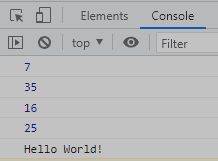

function add1(num1, num2){
return num1+num2;
}
let result = add1(3, 4);
console.log(result);
const add2 = function (num1, num2){
return num1+num2;
};
result = add2(31, 4);
console.log(result);
/*const add3 = (num1, num2)=>{
return num1+num2;
};*/
const add3 = (num1, num2)=> num1+num2;
result = add3(12, 4);
console.log(result);
// const sqFunction = function(a) {
// return a*a;
// }
// const sqFunction = (a) => {
// return a*a;
// }
// const sqFunction = (a) => a*a;
Console Log Output

const sqFunction = a => a*a; //this is only done if there is 1 parameter function
console.log(sqFunction(5));
const sayHello = () => console.log("Hello World!");
sayHello();
// setInterval(function test(){
// console.log("After 2 secs");
// }, 2000);
//setInterval(function(){console.log("After 2 secs")}, 2000);
//setInterval(()=>{console.log("After 2 secs")}, 2000);
//setInterval(()=>console.log("After 2 secs"), 2000);